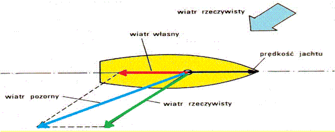
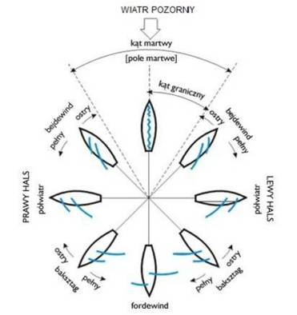
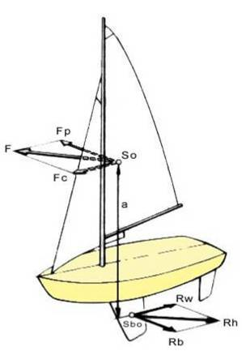
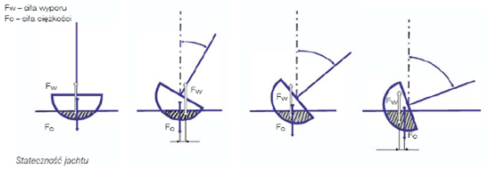
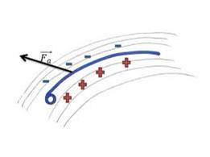
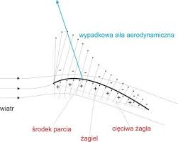
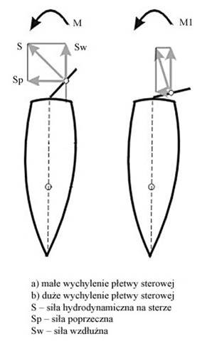

Teoria żeglowania
Wiatr

Rodzaje wiatrów:
Wiatr rzeczywisty WR – to naturalny ruch powietrza wywołany różnicą ciśnienia, (odczuwalny gdy stoimy)
Wiatr własny WW – to wiatr wytwarzany podczas ruchu (odczuwany gdy się ruszamy, np. podczas jazdy na rowerze,).
Wiatr własny jest tym silniejszy im szybciej się poruszamy. (Jak powiedział mi kiedyś kpt. Piwnicki, dzięki niemu możemy przeziębić wielbłąda na pustyni).
Wiatr pozorny WP –to wypadkowa wiatru rzeczywistego i własnego (gdy wieje wiatr naturalny, a my się poruszamy)
Kursy jachtu względem wiatru

Prawy i lewy hals:
Każdy kurs względem wiatru może być lewego lub prawego halsu.
Hals to określenie strony z której wije wiatr.
Jak wiatr wieje z lewej strony i grot jest na prawej burcie - to płyniemy lewym halsem,
jak wiatr wieje z prawej strony i grot jest na lewej burcie to płyniemy prawym halsem.
Do określenia halsu służy nam żagiel główny (grot).Gdy nie mamy grota i płyniemy na
samym foku to oczywiście on wskazuje nam hals. To bardzo ważne którym halsem płyniemy
bo od tego będzie zależało czy mamy pierwszeństwo przed innym jachtem czy nie.
Tylko płynąc prawym halsem mamy pierwszeństwo na innym jachtem.
Siły występujące w żeglarstwie:

Siły działające na jacht w ruchu:
F – siła nośna -
aerodynamiczna
Fp – siła dryfu
Fc – siła ciągu
So – środek ożaglowania
Rh – siła hydrodynamiczna
Rw – siła oporu wzdłużnego - hamująca
Rb – siłą bocznego oporu
Sbo– środek bocznego oporu
Stateczność jachtu

Jacht bardzo rzadko znajduje się w pozycji pionowej.
Najczęściej porusza się w przechyle.
(Sprawcami przechyłów na jachcie są siły aerodynamiczna i hydrodynamiczna).
Jacht jednak stara się powrócić do pionu.
Zdolność jachtu do powrotu z przechyłu do pozycji pionowej nazywamy statecznością poprzeczną.
Zapewnić ją możemy poprzez odpowiedni kształt kadłuba - mówimy wtedy o stateczności kształtu, lub poprzez zastosowanie balastu -
mówimy wtedy o stateczności ciężaru.
Dlaczego jacht płynie?


Z wiatrem, wydaje się oczywiste.
Jacht jest popychany przez wiatr (założenie niestety nieprawdziwe),
ale dlaczego płynie „pod wiatr” czyli bajdewindem?
To wszystko dzięki sile nośnej powstałej na żaglu, gdy wiatr uderza w żagiel pod kątem (opływa go)
Wiatr uderzający o żagiel pod kątem rozdzielany jest na dwie części. Jedna część owiewa powierzchnię nawietrzną, a druga zawietrzną.
Zawirowania powietrza powodują znaczne obniżenie powietrza po zawietrznej stronie żagla. Dążąc do wyrównania ciśnienia, powietrze po nawietrznej stronie napiera na żagiel powodując powstanie siły nośnej (aerodynamicznej) napędzającej jacht.
Działnie steru

Na ster działa siła hydrodynamiczna. Składa się ona z dwóch sił:
Siły poprzecznej – skręcającej
Siły wzdłużnej – hamującej